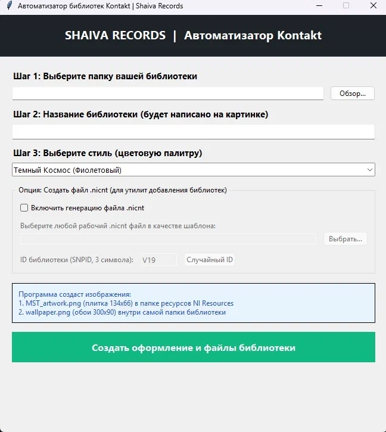

Уникальные Lo-Fi эффекты, виртуальные синтезаторы и оптимизированные сэмплерные библиотеки.

Lo-Fi эффект и сатуратор советских кассет
Креативный плагин, созданный для придания трекам теплого, лампового аналогового звучания. Содержит 10 оригинальных профилей шума советских кассет (МК-60, Свема, Тасма, Славич).

Советские аналоговые синтезаторы
Сэмплерная библиотека, созданная на основе пака «Soviet Synths From Mars». Содержит звуки 6 легендарных синтезаторов (Поливокс, Аэлита, Альтаир-231, Эстрадин-230, Маэстро, Том-1501) и 3 драм-машин.

Гибридный аналоговый инструмент
Сэмплерная библиотека на базе советского электропиано серии «Скерцо». Подходит как для классического электропиано, так и для создания плотных винтажных пэдов и текстур.

Классическая драм-машина 90-х
Тщательно воссозданное звучание легендарного драм-модуля Boss DR-660. Библиотека создана на основе высококачественных WAV-сэмплов (48kHz / 24-bit).

Автоматизатор библиотек NI Kontakt
Утилита на Python для быстрого оформления сторонних библиотек. Автоматически создает обложки, генерирует файлы манифестов и файлы регистрации (.nicnt) за пару кликов.
Мы — небольшая независимая лаборатория звука, которая занимается восстановлением, оцифровкой и оптимизацией культовых винтажных музыкальных инструментов, а также созданием полезного софта для облегчения работы музыкантов.
Помимо оцифровки собственных находок, мы нередко берем за основу редкие общедоступные или сторонние библиотеки сэмплов, которые изначально были сделаны неудобно или работали нестабильно. Мы бережно пересобираем их, оптимизируем структуру файлов для снижения нагрузки на память и адаптируем интерфейсы под современные стандарты сэмплеров. Это позволяет дать второе дыхание редким звукам и сделать их удобными для быстрого творчества.
Все наши разработки (синтезаторы, эффекты и библиотеки) полностью бесплатны и создаются на чистом энтузиазме. Если вам нравится наш софт, вы можете поддержать проект рублем.